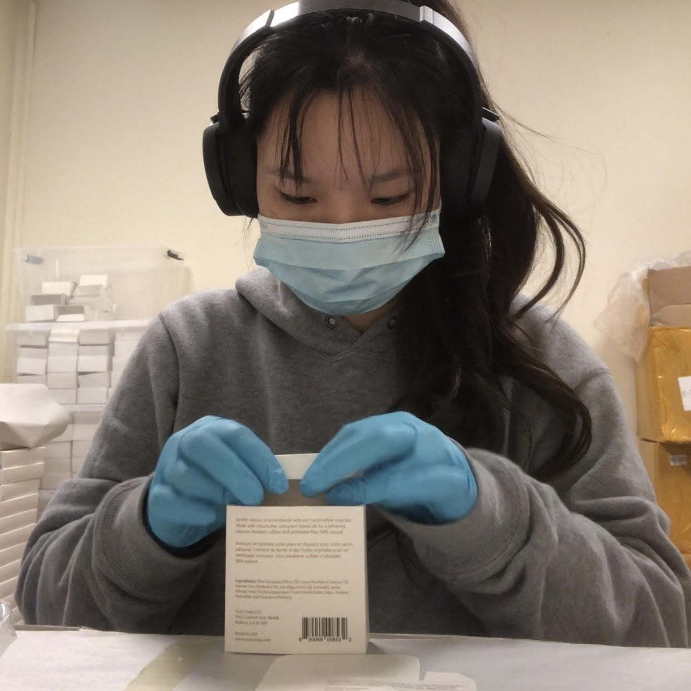
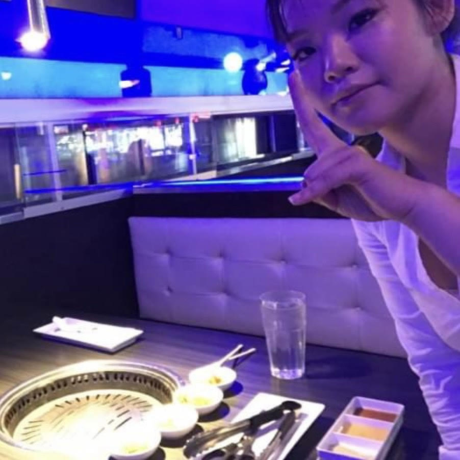
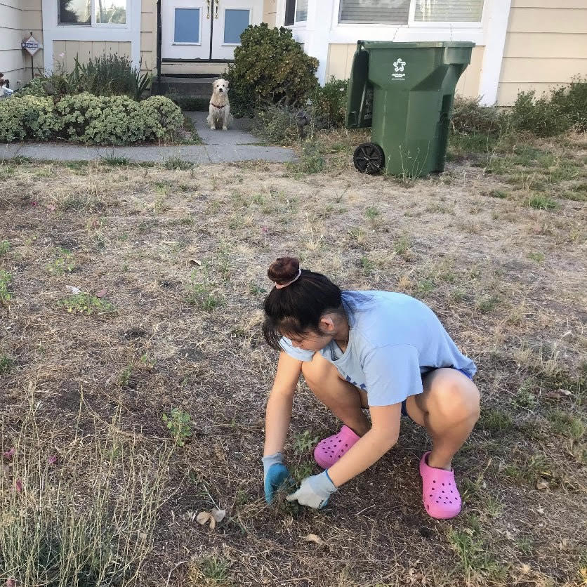
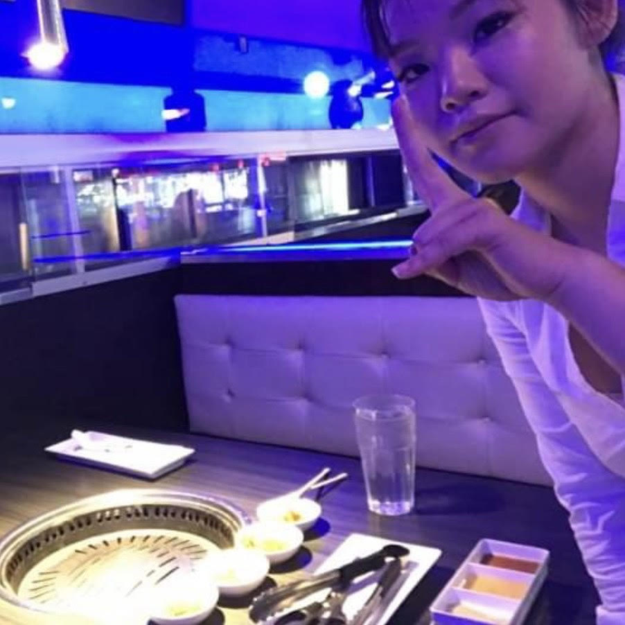
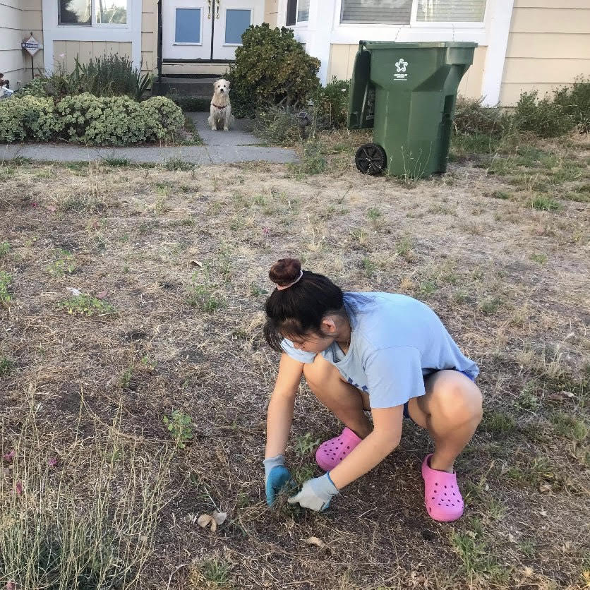

Ariel Chiang
Ever since I was a little girl I was fascinated with people and how they interact with each other. Why did people act the way they did and make the decisions they make? As I grew older, I began to notice common patterns within people’s behavior and began to make inferences on how people would react to certain situations. However, I still could not put a name to all the phenomena I observed. This all changed when I took AP Psychology my junior year of high school. I was finally able to explain with words why people acted the way they did and the subject fascinated me. This passion for understanding behavior leads me to where I am today: a second year Psychology student at the University of California, Riverside.
As a natural observer and introvert, I am able to gauge and understand social situations around me quickly. This makes me adaptable to any situation. I have taken my own and observed experiences in life as data to help me become a better more sociable person. That is why it is surprising for many to hear that I am an introvert. I have practiced my social skills throughout my various jobs as a server at Gen Korean BBQ as well as the sales receptionist and Snap Fitness Gym. Through these experiences I was able to develop new social skills within a professional atmosphere. I discovered that I am patient with people, even customers that give me a hard time. Through these positions I also learned how to interact with coworkers and authoritative positions. I also further developed my organizational skills as these jobs required a tidy workspace.
A recent position I have held was a packaging assistant at Yuzu Soap. This was a part-time job; I worked there for a month. But during this time I discovered much about myself. Working 25 hours a week while being in school full-time was not an easy task for me and I really honed my time management skills. I was able to keep up with my grades as I held this position. This job was a bit mundane as well. I would sit at the warehouse for 8 hours packaging the exact same product over and over again. This absolutely was not the most fun job in the world nor did I interact with many people due to the social distancing of workers during the pandemic. However, I was able to learn more about myself and how patient I could be. I realize I had a strong work ethic and if I put my mind to something, such as doing the same task for 8 hours, I could. I would often work with a podcast playing in the background and through this I was able to develop strong multitask skills as I was working my brain by absorbing content and my body at the same time.
My positions have shaped who I am today and taught me a lot about myself. Through each position I have held, I have been able to learn more skills that will help me in the future. I hope that I will be able to gain more knowledge in the future and continue achieving.
Experience
Publicity Chairr
• Design and manage content on Sigma Omicron Pi Sorority's social media accounts
• Experience with Canva, Instagram, TikTok, Twitter, and Facebook
Packaging Assistant
• Package and label bath and body products with great attention to detail
• Prepare and pack outgoing shipments
• Perform quality control assessments on finished goods
• Maintain work environment cleanliness
Server
• Responsible for restaurant customers, casheiering, hosting, cleaning restaurant, serving food, bussing tables
• Developed customer service skills
• Able to adapt in a fast-paced work environment
Sales Receptionist
• Sell andadminister membership for clients
• Assist personal trainers
• Maintain clean work environment in the gym
• Developed customer service and sales respresentative skills
Education
University of California, Riverside
Portfolio




 